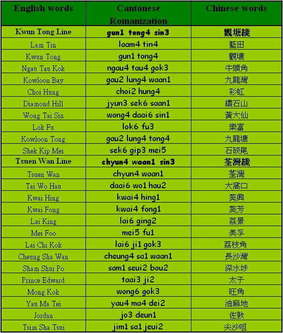
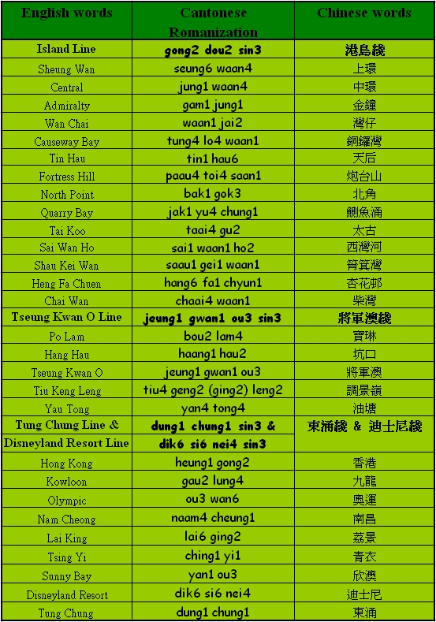
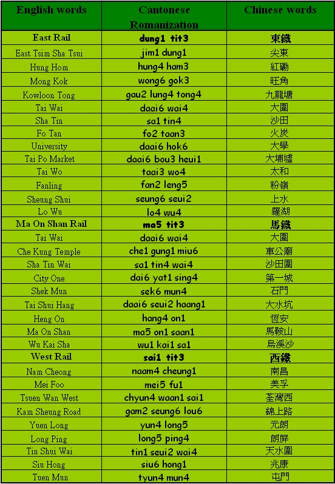

Unit 14 Places in Hong Kong
Unit 14 Places in Hong Kong 
Objectives
- To recognize places in Hong Kong in Cantonese
Activities:
Try to use the following vocabularies in the sentence structures and themes you have learnt in the previous lessons.

Vocabulary
MTR Stations


